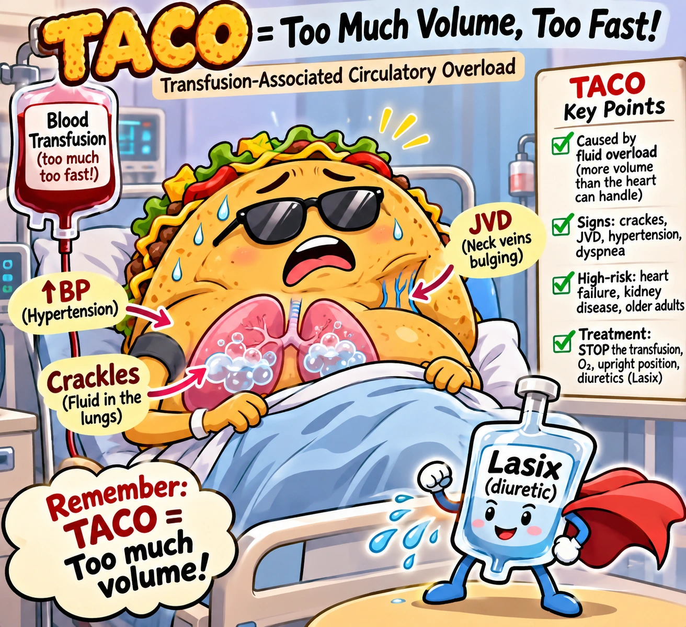
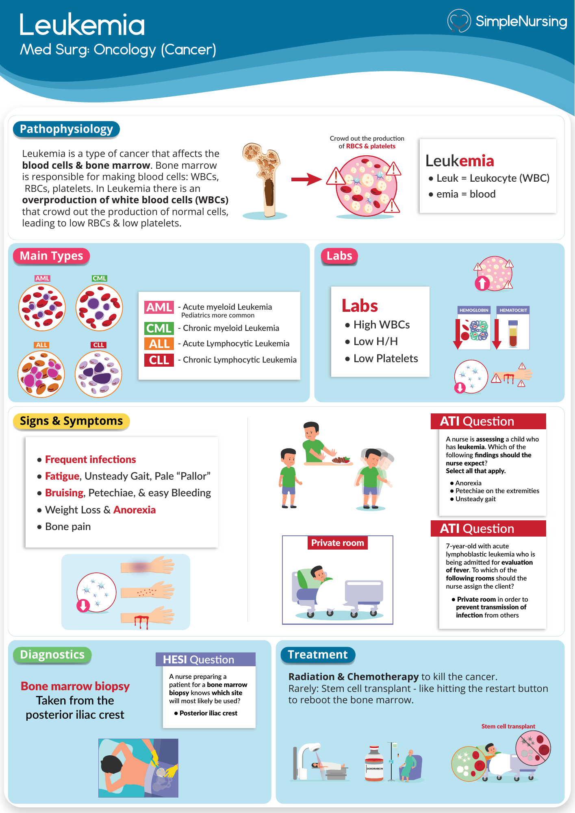
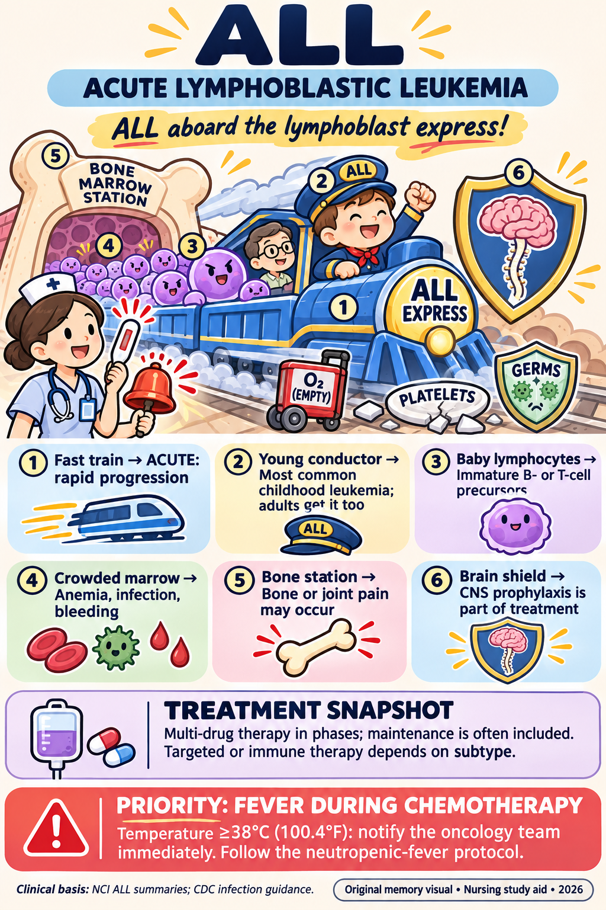

Hgb < 7 g/dL
Reference range: Hemoglobin: approximately 12–16 g/dL (adult female), 14–18 g/dL (adult male). Use the laboratory’s stated range.
- What it means
Transfuse PRBCs. (Normal H&H is "in the teens.")
NUR 258 · Study collection · Added November 10, 2026
Your downloaded Exam 4 notes, rebuilt as readable text with comparison cards and pictures.
Lab reference reminder: Hgb approximately 12–16 g/dL (adult female) / 14–18 (adult male); platelets 150,000–400,000/µL; WBC 4,500–11,000/µL; ANC 1,500–8,000/µL; aPTT about 25–35 seconds and INR 0.8–1.1 when not anticoagulated. Use the laboratory’s stated ranges. Anticoagulant targets are treatment ranges, not normal ranges.
Built from the student's Exam 4 study guide and Professor Halecka's four lecture transcripts. ★ = the professor stressed it in lecture (said "we need to know this," quizzed it, or repeated it). Halecka said this is usually the lowest exam score of the course, and that you should apply concepts rather than memorize subtypes or staging numbers.
Short on time? Jump to section 16, Quick exam answers: the 7 rules that answer most of the exam questions, "if you see this → think that," and priority interventions.
Reference range: Hemoglobin: approximately 12–16 g/dL (adult female), 14–18 g/dL (adult male). Use the laboratory’s stated range.
Transfuse PRBCs. (Normal H&H is "in the teens.")
Reference range: Platelets: 150,000–400,000/µL. Use the laboratory’s stated range.
Normal
Reference range: Platelets: 150,000–400,000/µL. Use the laboratory’s stated range.
Bleeding precautions sign goes on the door
Reference range: Platelets: 150,000–400,000/µL. Use the laboratory’s stated range.
Transfuse platelets
Reference range: Platelets: 150,000–400,000/µL. Use the laboratory’s stated range.
Severe thrombocytopenia
Reference range: ANC: approximately 1,500–8,000/µL. Use the laboratory’s stated range.
Patient is neutropenic
Reference range: ANC: approximately 1,500–8,000/µL. Use the laboratory’s stated range.
Neutropenic precautions sign goes on the door
Report immediately → cultures/antibiotics (not just Tylenol)
Reference range: aPTT: approximately 25–35 seconds without anticoagulation; treatment targets follow the ordered protocol. Use the laboratory’s stated range.
Baseline before heparin
Reference range: aPTT: approximately 25–35 seconds without anticoagulation; treatment targets follow the ordered protocol. Use the laboratory’s stated range.
Check q6h until therapeutic 3 times in a row, then q24h
Reference range: INR: 0.8–1.1 without anticoagulation; the ordered therapeutic target is different. Use the laboratory’s stated range.
Baseline
Reference range: INR: 0.8–1.1 without anticoagulation; the ordered therapeutic target is different. Use the laboratory’s stated range.
Low → dose ↑; high → hold/↓ dose, vitamin K if bleeding
Max time from blood bank pickup to hanging blood
Max infusion time per unit, counted from the original start time, even after a pause
Stay with the patient; recheck vitals at 15 min
After any venipuncture when platelets are low (treat it like an arterial stick)
Engraftment period after stem cell transplant (most critical time)
Healthy ejection fraction on echo (watch for chemo cardiotoxicity)
Hospice eligibility (re-evaluated about every 90 days)
Avoid sun on skin treated with external radiation
No pregnant visitors or children
After permanent brachytherapy seeds
When they conflict, go with the professor, since she writes the test.
DIC priorities: The student's guide says to give heparin "only if clotting is the dominant problem." Halecka taught the order as (1) treat the underlying cause (antibiotics for sepsis) → (2) airway/O2, IV fluids, vasopressors, and start the heparin drip at the same time as the fluids → (3) blood products (platelets, FFP, cryo, PRBCs) last. Heparin stops new clots; it doesn't dissolve existing ones.
Polycythemia vera is a cancer (blood cancer). Aplastic anemia is NOT a cancer.
Hemophilia labs: platelets normal, PTT ↑, INR normal. Give clotting factors before and after procedures. Do not transfuse before a procedure (only after, if they bleed).
Hemophilia joint bleed (RICE): if the area is now an open, bleeding wound, Compression is the priority.
HIT vs. a high PTT: a PTT of 106–110 on a heparin drip → titrate per protocol (hold about 1 hr and decrease); don't panic. Platelets dropping on heparin (e.g., 250K → 80K) = HIT → stop the drip and call the provider (likely protamine sulfate and a switch to a different anticoagulant). Check platelets at least once a shift on a drip.
Iron timing: take it between meals (empty stomach → N/V and noncompliance; with food → absorption drops ~50%). Liquid iron stains teeth → use a straw and rinse after. Recheck labs every 2–3 months.
Transfusion is a "band-aid," not the treatment for iron deficiency, aplastic anemia, sickle cell, or DIC. Treat the cause.
Infection kills first: in pancytopenia, infection/sepsis is the priority unless the patient is actively bleeding right now.
Neutropenic fever: notifying the provider for antibiotics/cultures comes before putting the sign on the door ("the sign doesn't stop germs").
Leukemia subtypes: "Do not panic." Questions may name AML/CLL/etc., but answer with general leukemia care.
Sickle cell crisis: fluids are the priority (dilute the blood, stop clumping), then pain meds. Bed rest during crisis (Hgb ~5, dizzy, hypotensive → fall risk and ↓ O2 demand). Prevent clots with SCDs, SubQ heparin, and range of motion instead of walking.
Splenomegaly is an EXPECTED finding in sickle cell, polycythemia vera, and leukemia. A ruptured spleen is an emergency: hypotension, bleeding, left shoulder pain.
Neutropenic room = POSITIVE pressure (not negative, no N95 needed). Mask the patient during transport.
Hospice: O2 at about 2 L is for comfort only. Usually no antibiotics. Dyspnea is managed with morphine and anxiolytics. Only the hospice physician and nurse follow the patient.
The process of making blood cells; one stem cell splits into the myeloid and lymphoid lines
RBCs (O2), platelets/megakaryocytes (clotting), neutrophils (bacteria), eosinophils (parasites/allergy), basophils (histamine), monocytes → macrophages, mast cells
T cells (kill infected cells), B cells (make antibodies), plasma cells (release antibodies), NK cells (kill virus-infected and cancer cells)
Protein in RBCs that carries O2
% of blood volume made up of RBCs
RBC size. Microcytic (<80) = iron deficiency. Normocytic = chronic/kidney disease. Macrocytic (>100) = B12/folate deficiency or alcohol. You don't need to memorize the numbers.
Amount of Hgb per RBC; hypochromic (low) = iron deficiency
Stored iron. ↓ = iron deficiency; ↑ = overload/inflammation. The lab to monitor for iron deficiency.
Total iron-binding capacity: ↑ in iron deficiency, ↓ in overload/chronic disease
Immature RBCs; measures bone marrow activity
Confirms sickle cell disease
Diagnoses aplastic anemia and leukemia. Site: posterior iliac crest. Afterward, hold pressure (the concern is low platelets).
Breaks down WBC types; shows immature cells (blasts) in leukemia
All three cell lines low: RBCs (anemia), WBCs (infection), platelets (bleeding)
Low neutrophils → infection risk
Absolute neutrophil count; guides neutropenic precautions
Low platelets → bleeding risk
Tiny red/purple pinpoint dots (superficial bleeding)
Larger purple patches; deeper, worse than petechiae
Nosebleed
Black, tarry stool (upper GI bleed)
Blood / hemoglobin in the urine
↓ Hgb, ↓ Hct, ↓ RBCs → less O2 to tissues. General S/S: fatigue, weakness, pallor, SOB, tachycardia, dizziness/syncope, cold intolerance, brittle nails, poor wound healing (from low tissue O2).
Not making enough RBCs (iron/B12/folate deficiency, bone marrow suppression, chemo)
RBCs destroyed early (e.g., sickle cell)
Craving non-food items (ice, dirt, clay); a sign of iron deficiency
Red, cracked sores at the corners of the mouth; a classic anemia sign
Iron, B12, or folate deficiency ("red is red")
Most common anemia. Causes: GI bleed (#1), heavy periods, pregnancy, poor diet, alcohol, IBD, long-term NSAIDs/aspirin. Labs: ↓ ferritin, ↑ TIBC, microcytic/hypochromic. Treatment: PO iron + vitamin C (orange juice), between meals. Avoid taking it with milk, calcium, antacids, or tea/coffee. IV iron infusion if PO fails. Expected: dark/black stools and constipation. Diet: red meat, seafood, beans, leafy greens, dried fruit.
Bone marrow stem cell failure → pancytopenia. Not cancer. Causes: chemo/radiation, drugs/chemicals, viruses, idiopathic. Treatment: stem cell transplant (best cure) + immunosuppressants, plus RBC/platelet transfusions as needed. Supplements do nothing. Patient may be on neutropenic and bleeding precautions.
Large RBCs (↑ MCV) from impaired DNA synthesis. Two types: B12 deficiency and folate deficiency. Large cells clump and get damaged leaving the marrow.
B12 deficiency from lack of intrinsic factor. On the test, megaloblastic = B12 = pernicious.
Protein made in the stomach, needed to absorb B12. Lost with gastric surgery/bypass, stomach cancer, Crohn's, or genetics.
Anemia S/S plus neuro symptoms: paresthesia, balance/gait/proprioception problems, confusion, memory loss (B12 protects the myelin sheath). Treatment: lifelong IM/SubQ injections, never switched to oral. At risk: gastric surgery, Crohn's, vegans, alcoholics.
Causes: poor diet, alcoholism, pregnancy. No neuro symptoms. Treatment: PO folic acid and leafy greens, beans, citrus.
Yellow IV fluid with added vitamins (B12, folate, thiamine) given to alcoholic patients
Autosomal recessive hemolytic anemia. Crescent-shaped RBCs clump → vaso-occlusive crisis, severe pain, hypoxia. Pain and jaundice are unique to sickle cell among the anemias.
Sickled cells block vessels → ischemic pain, possible tissue necrosis
Dehydration (#1, especially in summer), Infection, Stress/cold, ↓ O2/high altitude
IV fluids (priority, NS), IV opioids, O2, treat the cause (antibiotics if fever/infection), transfusion if Hgb < 7, and a heparin drip if a clot is present
Sickling/clot in the lungs; an emergency
↑ fetal hemoglobin (HbF) → ↓ sickling and crises (long-term prevention)
Swollen hands/feet in children with sickle cell
Spleen destroyed by repeated sickling/infarcts
Hydrate, avoid cold/high altitude/smoking/flying high, keep vaccines current, low-dose aspirin to prevent clots, seek care for fever or chest pain
Cancer: marrow overproduces RBCs → thick, viscous blood → clots (stroke, MI, DVT). S/S: ruddy (red) face, HTN, headache, dizziness, blurred vision, splenomegaly, itching after a hot shower, possible jaundice. Treatment: therapeutic phlebotomy (first-line; the blood is discarded, not donated), fluids, low-dose aspirin, hydroxyurea/interferon. Priority: prevent clots (range of motion, fluids). No iron and no warm compresses.
Burning pain and redness of the hands/feet (polycythemia vera)
Removing blood to ↓ RBC count; like old-fashioned "bloodletting"
Cancer of the bone marrow: overproduction of immature WBCs (blasts). WBC count looks high but is functionally low, and crowding causes pancytopenia. Diagnose with CBC w/ diff + bone marrow biopsy. Risks: chemicals/pesticides, smoking, prior chemo, genetics.
Acute = fast and aggressive, treated aggressively (often a 4–6 week hospital stay for induction chemo). Chronic = slow, sometimes "watch and wait," but can turn acute.
The letter M or L tells you which cell line is affected: AML/CML = myeloid, ALL/CLL = lymphoid
Acute myeloid leukemia; blasts on biopsy; older adults
Chronic myeloid leukemia; Philadelphia chromosome; treated with TKIs (imatinib/Gleevec). Phases: chronic → accelerated → blast crisis
Late CML phase that behaves like acute leukemia
Acute lymphocytic leukemia; most common childhood leukemia (peak ~age 4), good prognosis. Kids present with bruising, bone pain, frequent infections, fatigue. Also needs CNS chemo.
Chronic lymphocytic leukemia; older adults (~70); often found on routine labs; lymphocytosis; "watch and wait"
Fever + night sweats + weight loss
Cancer of the lymphatic system/lymph nodes → immunocompromised patient
Reed-Sternberg cells (cells with two nuclei). Younger adults (15–34) and again after 60. Painless swollen cervical (neck) node first; spreads in an orderly, predictable node-to-node pattern. Goal = cure (~92–94% cure rate). Chemo + radiation. Risk factor: Epstein-Barr virus.
Older adults, more often men; B or T cells; spreads randomly, so it is usually found late (stage 3–4). Worse S/S (B symptoms, nodes in many areas). Goal = remission. Watch for tumor lysis syndrome after chemo.
Cancer of plasma cells (B cells) in the marrow; older adults ("old CRAB"). Malignant plasma cells make M protein → kidney damage. Classic presentation: older patient with excruciating bone pain + high calcium. No cure. Treatment: chemo/radiation, immunotherapy, HSCT, bisphosphonates (e.g., alendronate/Fosamax), calcitonin, IV fluids, pain control, fall/fracture precautions, dialysis if kidneys fail. Never give calcium supplements.
Calcium ↑ (confusion, constipation, weakness, kidney stones), Renal failure, Anemia, Bone lesions/pain/fractures
Abnormal antibody made by myeloma cells; found in blood/urine; clogs the kidneys
"Punched-out," hollow-looking holes in bone on X-ray (myeloma)
A bone breaks easily from disease, not trauma
Painful sores/inflammation of the mouth and GI lining from cancer treatment
↓ production (marrow problems, leukemia, chemo), ↑ destruction (ITP), ↑ consumption (DIC)
Electric Razor, Avoid aspirin/NSAIDs/heparin, small Needles, Decrease sticks/IM injections, protect from Injury
Soft toothbrush, no flossing, no rectal temps, no enemas or suppositories, stool softeners (no straining), minimize BP cuff use and suctioning, keep lips moist, avoid unnecessary Foleys, no crunchy foods, cluster lab draws into one stick, hold pressure 5–10 min. IM injections are worse than SubQ; question IM orders when platelets are low.
X-linked (mostly males), genetic; missing a clotting factor → can't form a stable clot. Hemophilia A = Factor VIII; B (Christmas disease) = Factor IX. Deep bleeds: hemarthrosis (joints), intracranial, GI; any head bump → ER for a head CT. Treatment: replace the factor (often self-injected through a port), no aspirin, RICE, no contact sports (swimming is OK).
Bleeding into a joint; ~75% of hemophilia bleeds
Rest, Ice, Compression, Elevation; Compression is the priority if actively bleeding
Most common inherited bleeding disorder; affects men and women equally. Missing vWF, which helps platelets stick and activates Factor VIII. Superficial/mucosal bleeding: nosebleeds, gums, heavy periods, easy bruising; often diagnosed later in life. Treatment: desmopressin (DDAVP) before procedures, vWF replacement.
Synthetic ADH (also used for diabetes insipidus); temporarily ↑ vWF/Factor VIII
Disseminated intravascular coagulation: "clot everywhere, then bleed everywhere." Always secondary to something else: sepsis (#1), trauma, burns, shock, OB emergencies (abruption, amniotic fluid embolism), cancer. Microclots use up platelets and factors → bleeding from IV sites, gums, nose, GI/GU; organ ischemia. Mortality is >80% if missed.
↓ platelets, ↓ fibrinogen, ↓ H&H (if bleeding). ↑ PT, ↑ PTT, ↑ INR, ↑ D-dimer, ↑ FDPs, schistocytes present
Treat the cause → O2/airway, fluids, vasopressors + heparin drip → platelets/FFP/cryo/PRBCs. Avoid unnecessary sticks, monitor I&O, no warm compresses (vasodilation → more bleeding), no aspirin.
Breakdown products of clots; ↑ when clots form and break down (DIC)
Clotting protein; consumed in DIC; replaced with cryoprecipitate
Blood product rich in fibrinogen
Immune thrombocytopenic purpura: autoimmune antibodies destroy platelets. Treatment: corticosteroids or splenectomy.
Thrombotic thrombocytopenic purpura: clots form in the capillaries → AKI, MI, stroke
Heparin-induced thrombocytopenia: immune reaction to heparin → platelets drop while on heparin, causing clotting. Stop heparin and notify the provider.
IV drip for active clots (DVT, PE, MI, ischemic stroke not eligible for tPA, new A-fib); SubQ for prevention. Baseline labs: CBC (platelets, H&H), PT/PTT/INR. Monitor aPTT (therapeutic 60–80). Antidote: protamine sulfate. Prevents new clots; doesn't dissolve old ones.
PO, long-term (DVT, PE, A-fib, mechanical valve); bridged from heparin. Monitor INR (2–3). Antidote: vitamin K.
INR monitors warfarin; aPTT monitors heparin
Blood from a donor
Your own blood, donated ahead of a planned surgery
The patient's own blood suctioned during surgery, filtered, and reinfused
Universal donor (used in a true emergency)
Universal recipient
Required before PRBCs
Should only get Rh-negative blood. Rh-positive blood can make them form antibodies, which matters most in women of childbearing age.
Use within 24 hours of thawing; infuse within 4 hours once started. ABO type must still be compatible.
Use special platelet tubing; infuse each unit over about 15–30 minutes; keep at room temperature (never refrigerate) and agitate gently. ABO type is still checked.
Packed red cells; ↑ O2-carrying capacity
Plasma: a volume expander + clotting factors (↓ INR). Used in DIC, massive transfusion, and warfarin reversal.
Yellowish product; infused quickly (15–30 min); don't refrigerate
Order and consent → good IV (18–20 g) → baseline vitals before the tech picks up the blood → Y-tubing with filter → prime with 0.9% NS only → clamp the saline and open the blood → stay 15 min and recheck vitals → finish within 4 hr → flush the remaining blood in the tubing with NS. Two licensed nurses verify at the bedside.
Keep a 1 L NS bag on new primary tubing in the room for reactions. Don't open the Y-tubing saline (that pushes more blood in).
Stop the transfusion, run NS on new tubing, stay with the patient and take vitals, call provider/rapid response and the blood bank, send the bag, tubing, blood, and urine to the lab, document
ABO incompatibility; the most serious. Classic and unique signs: flank/low back pain, hemoglobinuria, feeling of impending doom; also fever, chills, hypotension, tachycardia, ↑ BUN/creatinine. Never restart.
Most common; reaction to donor WBCs. Temp rises ≥1°F (0.5°C) over baseline; no flank pain, hemoglobinuria, or doom, and normal BUN/creatinine. Stop, call provider, Tylenol; may restart slowly (still within 4 hr of the original start).
Hives, itching, flushing. Common after many transfusions; may premedicate with Benadryl + Tylenol. Mild: may restart slowly. Severe/anaphylaxis: epinephrine.
Transfusion-associated circulatory overload (too fast or too much). HTN, SOB, crackles, JVD, edema. No saline! Sit upright, O2, diuretics (sometimes morphine), KVO line.
"Keep vein open": very slow rate (~5 mL/hr) to keep IV access
Transfusion-related acute lung injury (donor antibodies in the lungs). Sudden respiratory distress within 6 hr, SpO2 < 90%, hypotension, infiltrates on X-ray, no fluid overload signs. O2/intubation, possibly fluids/pressors. Never restart.
Contaminated product: high fever, chills, hypotension, shock. Stop, blood cultures, antibiotics, IV fluids. Never restart.
Hemolytic, TRALI, bacterial
Kidney hormone (given SubQ) that stimulates the marrow to make RBCs. For chronic anemia (CKD, chemo, patients who refuse blood). Not for an acute bleed. Monitor CBC/Hgb (don't rise too fast) and BP (HTN, clot risk); needs adequate iron.
Abnormal growth of cells
Stays in one place and doesn't spread (e.g., basal cell skin cancer is often just removed)
Invades tissue and can spread
Spread to distant organs (bone and brain are often the "final stop")
Cancer-causing substance ("anything can cause cancer")
Lung cancer (men and women; vaping counts)
Men: lung, prostate, colorectal. Women: lung, breast, colorectal.
Warning signs: Change in bowel/bladder, A sore that doesn't heal, Unusual bleeding/discharge, Thickening/lump, Indigestion/trouble swallowing, Obvious change in a wart/mole, Nagging cough/hoarseness, Unexplained weight LOSS (not gain), Pernicious anemia (new B12 deficiency → think GI cancer)
T cells, B cells, NK cells, and lymphokines find and kill malignant cells. Fails through loss of recognition (self vs. non-self), cancer cells hiding, or suppressor T cells turning the response down.
Cancer of epithelial tissue: skin, GI lining, lung, breast, prostate
Cancer of connective/supportive tissue: bone, cartilage, muscle
Bone marrow / lymphocytes / plasma cells
Prevent cancer from developing: avoid carcinogens, sunscreen, diet/exercise, no smoking/drinking, immunizations (HPV vaccine), chemoprevention (aspirin/celecoxib → colon; vitamin D/tamoxifen → breast)
Using drugs/substances to block cancer from developing
Screening to catch cancer early: Pap (21+, every 3 yr), mammogram (~40–45+), colonoscopy (~45+), prostate exam/PSA (~50+), annual fecal occult blood test, self-exams
Already have cancer: prevent metastasis/complications
Blood tests suggesting some cancers (PSA = prostate-specific antigen)
Tissue sample to confirm cancer and determine stage and grade
The provider delivers a diagnosis or scan results; refer the patient to them. Routine lab trends (e.g., WBC during pneumonia) are OK to share. Treatment starts only after diagnosis, staging, and grading.
How far it has spread. T = tumor size, N = lymph Node involvement, M = Metastasis. Stage 0 (in situ) to 4 (metastatic); higher is worse.
Stage 0: non-invasive, still in place
What the cells look like under a microscope (differentiation), Grade 1–4. Higher is worse.
How much tumor cells still look and act like their tissue of origin
Resembles normal tissue (Grade 1); better
Doesn't resemble normal tissue (Grade 3–4); fast spread, poor prognosis
Complete eradication
Prolong survival and contain spread (remission)
Relieve symptoms and improve quality of life; not seeking a cure
Cancer signs reduced or gone (may return)
The most frequently used, "ideal" cancer treatment
Skin sample / part of the tumor / whole tumor / aspiration of a tumor near the surface
Mass + small margin vs. tumor + surrounding tissue (to get all the "roots")
Removing high-risk tissue before cancer develops (e.g., mastectomy with family history)
Relieve symptoms, not cure (e.g., remove a tumor pressing on the lungs to ease SOB)
Restore function or appearance (e.g., breast implants)
Treatment given before the main treatment to shrink the tumor
Radiation affects only tissue in the treatment field
Most common; daily doses over weeks. The patient is NOT radioactive. The skin is marked with a tattoo; don't wash it off. Avoid sun 10 am–3 pm.
Seeds/implant placed in or next to the tumor (cervical, uterine, prostate, breast). The patient and body fluids ARE radioactive. Temporary = stays in the hospital for a few days, then the implant is removed. Permanent = goes home; radioactivity fades over months.
Radiation sign, private room with the door closed, lead apron + thyroid shield, dosimeter badge (on the outside of the apron), cluster care, rotate caregivers, no pregnant nurses, encourage self-care, patient stays in the room, linens and dressings stay in the room until discharge. Dislodged implant: don't touch it — use long-handled tongs to put it in a lead container. Visitors: 30 min max, 6 ft away, no pregnant visitors or kids.
Badge that measures a worker's radiation exposure (read about monthly)
Flush twice with the lid down, strain urine 7–10 days, sleep apart, no sex, wash laundry separately (then run an empty cycle), don't share utensils, no heavy lifting or straining (can push seeds out)
Usually localized and starts within about 2 weeks; mimics chemo effects (fatigue, mouth sores, alopecia, cracked lips, pancytopenia, N/V/D) plus skin burns → impaired wound healing → infection
Drugs that kill rapidly dividing cells (cancer and healthy cells). Universal effect: pancytopenia. Most often IV through a central line or port. Methotrexate is a chemo drug also used for autoimmune disease. Requires a chemo-certified nurse.
Check the platelets on the CBC
Surgically placed central access; accessed with a Huber needle at 90°
Always pull back for blood return before and during chemo through a central line or port
Leakage of the drug from the vein into surrounding tissue
Drug that causes tissue damage and necrosis if it leaks; never give peripherally
Stop the infusion → notify the provider → give the antidote SubQ/intradermally at the site (if one exists). Prevention: check patency.
Purple chemo gloves, long-sleeved disposable gown, face shield, chemo waste containers, chemo sign. Patient waste is hazardous too (wear PPE when emptying a Foley). Staff exposure → N/V, skin/eye irritation, nasal ulcers, reproductive problems.
Some drugs (e.g., doxorubicin) have a maximum lifetime dose; exceeding it → cardiopulmonary toxicity
Chemo-induced nausea/vomiting: the most common side effect. Antiemetics (ondansetron/Zofran) before and after, bland diet, small frequent meals, stop fluids 1 hr before treatment, cold or room-temperature foods (avoid odors), high protein, plastic utensils for metallic taste, food diary
Megestrol (Megace); steroids are a last resort
Inflamed, painful, cracked, bleeding mouth sores (swollen gums/tongue/lips = stomatitis, not anaphylaxis). Care: frequent mouth checks; non-alcohol rinses (magic mouthwash = lidocaine + diphenhydramine, salt water/0.9% NaCl, baking soda); no lemon-glycerin swabs; topical anesthetic before meals; soft, bland, cool foods; avoid salty, spicy, acidic, or crunchy food; straw; 2 L water/day; moist lips; gentle brushing, no flossing
Hair loss ~7–10 days after starting; regrows ~1 month after treatment. Cold cap constricts follicles so less chemo reaches the scalp (contraindicated in brain cancer). Use a hat or sunscreen on the scalp.
Pancytopenia from chemo
The most significant adverse effect (infection kills first). Precautions at ANC ≤ 1,000: private positive-pressure room, hand hygiene, dedicated equipment, limit/screen visitors, no fresh flowers/plants/fresh fruit, mask during transport, daily dressing changes, clean room, clean toothbrush daily (dishwasher), no rectal temps, temp checks, report fever immediately
Platelets < 50,000 → bleeding precautions; assess petechiae/purpura, epistaxis, stool for occult blood; stool softeners
Monitor fatigue and Hgb/Hct, assess dizziness and orthostatic hypotension, O2, rest, EPO or transfusion (Hgb < 7)
Infection words → neutropenia. Bleeding words → thrombocytopenia. Fatigue/dizziness/Hgb → anemia. Minimizing IV sticks applies to both neutropenia and thrombocytopenia; limiting visitors and dedicated equipment apply to neutropenia and brachytherapy.
Cognitive impairment: trouble concentrating, learning, and remembering. Teach puzzles, reading, repeating challenging tasks; avoid alcohol/drugs.
Monitor EF with an echo (healthy 50–70%); watch for HF (SOB, crackles = left-sided; edema = right-sided) and pneumonia
Possible sterility; use birth control during chemo; consider freezing eggs/sperm beforehand
Chemo-induced peripheral neuropathy: numbness/tingling (early sign), burning, starts in fingers and toes and moves up symmetrically; orthostatic hypotension. Teach daily foot checks, supportive closed-toe shoes, protect from burns.
Not relieved by rest. Alternate rest and activity, light exercise (walking), don't stay in bed all day, good nutrition.
Pain → anxiety → fear → more pain (the pain cycle). Give meds on a schedule (opioids for moderate/severe, nonopioids for mild); add non-drug methods.
Hgb/WBC/platelets rising to normal, better energy and appetite, fewer sores, fewer bleeding episodes
Replaces diseased marrow with healthy stem cells by IV (after chemo wipes out the marrow). Used in leukemia, aplastic anemia, myeloma, and some lymphomas. Does NOT mean cured.
Patient's own stem cells
Donor stem cells (often family)
Identical twin donor
~8–10 days after transplant while the new cells "take"; the most critical time. Highest risk of sepsis and bleeding; patients need antibiotics, transfusions, immunosuppressants.
Donor cells attack the recipient; happens with allogeneic transplants; acute or chronic; morbidity/mortality in 30–50%; treated with steroids/immunosuppressants
The recipient's body attacks the graft; prevented with immunosuppressants (↑ infection risk)
Uses the immune system to fight cancer (stimulates or suppresses it), e.g., monoclonal antibodies
Hits specific cancer cells while sparing normal cells → fewer side effects (e.g., monoclonal antibodies, TKIs)
e.g., the HPV vaccine prevents cervical and other HPV cancers
Tumor (lung/breast) compresses the SVC → blood backs up in the head and upper body. S/S: facial/neck edema, purple/red face, JVD, distended chest veins, dyspnea, epistaxis, cerebral edema if severe; systemic BP low. Order of care: sit up (High-Fowler's) → O2 (prepare for intubation) → high-dose IV steroids → one-time high-dose radiation → surgery if that fails.
Chemo rapidly kills cells, which burst and dump their contents → AKI and dysrhythmias. Labs: ↑ K⁺, ↑ phosphorus, ↑ uric acid, ↓ calcium ("3 up, 1 down"). S/S: flank pain, ↑ BUN/creatinine, muscle cramps/weakness, seizures, mental status changes (from low Ca), GI distress, gout. Priority: IV fluids (prehydrate before chemo). Then allopurinol, diuretics, for high K⁺: IV insulin + D50 (fast) or sodium polystyrene (Kayexalate); dialysis if severe; cardiac monitor.
Metastatic tumor presses on the cord. Back pain first, then weakness, numbness/tingling, ↓ DTRs, bowel/bladder incontinence → paralysis. Care: high-dose corticosteroids → emergency radiation → surgery; frequent neuro checks.
Bone metastasis or myeloma; tumors release a PTH-like hormone → ↑ Ca. "Bones (pain, fractures), stones (kidney), groans (N/V, constipation, ileus), psychiatric overtones (confusion, lethargy, depression)." Treatment: fluids 2–4 L/day, IV NS, loop diuretics, steroids, calcitonin/bisphosphonates.
Specialty focused on comfort and quality of life (symptoms plus psychosocial and spiritual needs). Can be given alongside curative treatment or within hospice; inpatient, outpatient, or home. Goal: prevent and relieve suffering. Doesn't replace treatment.
End-of-life comfort, not cure. Requires a terminal illness and a physician certifying ≤ 6 months to live. Living longer doesn't mean discharge; eligibility is re-evaluated (about every 90 days) and extended. The patient can leave anytime and restart treatment. Patient + family = the unit of care (includes bereavement support). Settings: home, hospital, hospice facility, nursing home, assisted living.
Maintenance meds stopped; only the hospice MD and nurse follow the patient. Morphine/fentanyl for pain; morphine + anxiolytics (lorazepam/Ativan, Xanax) for dyspnea. O2 at ~2 L for comfort only. Generally no antibiotics for pneumonia. Comfort-focused chemo or radiation can still be used to relieve symptoms.
Do not resuscitate; the patient's wishes guide care (family conflict is common)
DISC — sickle cell crisis triggers: Dehydration, Infection, Stress/cold, ↓ O2/altitude
RANDI — bleeding precautions: Razor, Avoid ASA/NSAIDs, Needles small, Decrease sticks, Injury
(Old) CRAB — multiple myeloma: Calcium ↑, Renal failure, Anemia, Bone lesions
B symptoms — fever, night sweats, weight loss
CAUTION UP — cancer warning signs
TNM — Tumor size, Nodes, Metastasis
TLS: 3 up, 1 down — K⁺, phosphorus, uric acid ↑; calcium ↓
Bones, stones, groans, psychiatric overtones — hypercalcemia
RICE — Rest, Ice, Compression (priority if bleeding), Elevation
Never restart: hemolytic, TRALI, bacterial. No saline: TACO.
NCJMM steps — Recognize cues → Analyze cues → Prioritize hypotheses → Generate solutions → Take action → Evaluate outcomes
The same mnemonics, plus the abbreviations used in this guide, with each letter spelled out.
TACO = fluid overload from a transfusion
T = Transfusion
A = Associated
C = Circulatory
O = Overload
In plain words: too much blood went in too fast, so fluid backs up into the lungs. BP goes UP → give diuretics, no saline.
TRALI = lung injury from a transfusion
T = Transfusion
R = Related
A = Acute (sudden)
L = Lung
I = Injury
In plain words: antibodies in the donor's blood attack the patient's lungs. BP goes DOWN → airway support; never restart.
Never restart: hemolytic, TRALI, bacterial. No saline: TACO.
DISC = what triggers a sickle cell crisis
D = Dehydration
I = Infection
S = Stress
C = Cold
Also: low oxygen / high altitude (the student's guide lists it with DISC)
RANDI = bleeding precautions when platelets are low
R = electric Razor only
A = Avoid aspirin and NSAIDs (ibuprofen-type pain meds)
N = small Needles
D = Decrease needle sticks and IM shots
I = protect from Injury
RICE = for a hemophilia joint bleed
R = Rest
I = Ice
C = Compression (the priority if it's actively bleeding)
E = Elevation
DIC = clotting, then bleeding, everywhere
D = Disseminated (spread all over the body)
I = Intravascular (inside the blood vessels)
C = Coagulation (clotting)
HIT = heparin destroying platelets
H = Heparin
I = Induced (caused by)
T = Thrombocytopenia (low platelets)
ANC = how many infection-fighting cells the patient has
A = Absolute
N = Neutrophil
C = Count
(Old) CRAB = multiple myeloma (usually an older person)
C = Calcium is high (it leaks out of the bones)
R = Renal failure (renal = kidney)
A = Anemia
B = Bone pain and bone lesions (holes in the bones)
ALL = the childhood leukemia
A = Acute (comes on fast)
L = Lymphocytic (affects lymphocytes, a type of WBC)
L = Leukemia
B symptoms = 3 signs seen in lymphoma and leukemia (not an acronym; just remember the 3)
Fever
Night sweats
Weight loss
CAUTION UP = cancer warning signs
C = Change in bowel or bladder habits
A = A sore that doesn't heal
U = Unusual bleeding or discharge
T = Thickening or a lump (breast, testicle, anywhere)
I = Indigestion or trouble swallowing
O = Obvious change in a wart or mole
N = Nagging cough or hoarseness
U = Unexplained weight LOSS
P = Pernicious anemia (new B12 deficiency, which can mean a GI cancer)
TNM = how cancer is staged (how far it has spread)
T = Tumor size
N = lymph Nodes involved
M = Metastasis (spread to other organs)
SVC syndrome = a tumor squeezing the big vein
S = Superior (upper)
V = Vena
C = Cava (together: the big vein bringing blood from the head and arms back to the heart)
TLS = tumor lysis syndrome (cancer cells bursting after chemo)
T = Tumor
L = Lysis (bursting)
S = Syndrome
Labs: 3 up, 1 down. Potassium ↑, phosphorus ↑, uric acid ↑; calcium ↓.
Bones, stones, groans, psychiatric overtones = high calcium
Bones = bone pain, fractures
Stones = kidney stones
Groans = stomach pain, nausea, constipation
Psychiatric overtones = confusion, tiredness, depression
GVHD = a stem cell transplant complication
G = Graft (the donor cells)
V = Versus (attacking)
H = Host (the patient)
D = Disease
Time, Distance, Shielding = brachytherapy (radioactive seed) safety
Time = spend as little time in the room as possible (cluster care, 30-min visits, rotate nurses)
Distance = stay 6 ft away
Shielding = lead apron, thyroid shield, dosimeter badge
NCJMM = the clinical judgment model your exam questions follow
N = Nursing
C = Clinical
J = Judgment
M = Measurement
M = Model
Its 6 steps, in order: Recognize cues → Analyze cues → Prioritize hypotheses → Generate solutions → Take action → Evaluate outcomes
Professor Halecka told you twice to chart these side by side, because most of the symptoms overlap. Focus on the column that sets each one apart.
Not enough iron (GI bleed #1)
↓ ferritin, ↑ TIBC, microcytic
Pica, angular cheilitis; black stools on iron are expected
PO iron + vitamin C between meals; IV iron if PO fails
Transfusion is not the fix
No intrinsic factor → can't absorb B12
Macrocytic (↑ MCV), ↓ B12
Neuro symptoms (paresthesia, gait, confusion)
Lifelong injections
Never switch to pills; iron is irrelevant
Poor diet, alcohol, pregnancy
Macrocytic, ↓ folate
No neuro symptoms
PO folic acid
—
Marrow stem cells fail; not cancer
Pancytopenia, empty marrow on biopsy
Infections + bleeding + anemia
Stem cell transplant + immunosuppressants
Supplements do nothing
Genetic; RBCs sickle and clump
Hgb electrophoresis
Pain + jaundice (no other anemia has these)
Fluids first, pain meds, O2, treat the cause; hydroxyurea long-term
Don't ambulate in crisis; no iron/B12
Cancer; too MANY RBCs
↑ Hgb/Hct/RBCs
Ruddy face, itching after a hot shower, HTN, clots
Phlebotomy, fluids, aspirin
No iron; no warm compresses
Immature WBCs crowd the marrow
ALL = kids; others = older adults
WBC high but doesn't work → pancytopenia; diagnose with bone marrow biopsy
Chemo → stem cell transplant. Answer generally; don't panic over subtypes.
Lymphocytes
Young adults (and >60)
Reed-Sternberg cells, painless neck node, orderly spread
Cure (~92–94%)
B/T cells
Older adults, men
Random spread, found late, B symptoms
Remission; watch for TLS
Plasma cells
Older adults
Bone pain + ↑ calcium, lytic lesions, kidney failure (CRAB)
No cure; fluids, bisphosphonates, calcitonin, fall precautions; no calcium
Missing Factor VIII (A) or IX (B); X-linked
Normal
↑ PTT, normal INR
Deep: joints, head
Replace the factor before and after procedures; compression if bleeding
Missing vWF; men and women
Normal
—
Superficial: nose, gums, heavy periods
Desmopressin (DDAVP) / vWF
Secondary to sepsis, trauma, OB
↓
↓ fibrinogen; ↑ PT/PTT/INR, ↑ D-dimer
Clots and bleeds everywhere
Treat the cause → fluids + heparin → blood products
Autoimmune destruction of platelets
↓
—
Petechiae, bruising
Steroids or splenectomy
Immune reaction to heparin
↓ while on heparin
—
Clotting
Stop heparin, call the provider
Flank pain, hemoglobinuria, impending doom, ↑ BUN/Cr
↓
Stop; NS on new tubing; rapid response; send blood + urine
Never
Fever ≥1°F above baseline only; normal BUN/Cr
~Normal
Stop, call provider, Tylenol
Yes, slowly (within 4 hr of the original start)
Hives, itching, flushing
Normal (↓ if anaphylaxis)
Benadryl (epinephrine if severe); premedicate next time
Yes, slowly, if mild
Crackles, JVD, edema, SOB
↑
Sit up, O2, diuretics, NO saline
Not specified in lecture
Sudden respiratory distress, infiltrates on X-ray, NO fluid overload
↓
O2, intubation
Never
High fever, chills, shock
↓
Blood cultures, antibiotics, fluids
Never
Infection (kills first)
Neutropenic at ANC < 2,000; sign at ≤ 1,000
Positive-pressure private room, no fresh flowers/fruit, limit visitors, dedicated equipment, mask during transport, daily dressing changes, clean room, report fever → antibiotics
Bleeding
Sign at < 50,000; transfuse ~20,000
RANDI, no IM injections/rectal temps/enemas, stool softeners, check stool for occult blood, watch for epistaxis, petechiae/purpura, pressure 5–10 min
↓ O2
Transfuse at Hgb < 7
Monitor fatigue, check Hgb/Hct, dizziness/orthostatic hypotension, O2, rest, EPO
Minimizing IV sticks applies to both WBC and platelets. Limiting visitors and dedicated equipment apply to both neutropenia and brachytherapy.
Tumor presses on the SVC (lung/breast)
Purple, swollen face/neck, JVD, epistaxis, dyspnea; systemic BP ↓
Sit up → O2/airway → IV steroids → one-time radiation → surgery
Cells burst after chemo
↑ K, ↑ phos, ↑ uric acid, ↓ Ca; flank pain, cramps, seizures, AKI, dysrhythmias
IV fluids first → allopurinol, diuretics, insulin + D50 for K → dialysis
Metastasis presses on the cord
Back pain first → weakness, numbness, bowel/bladder loss
Steroids → radiation → surgery; neuro checks
Bone metastasis / myeloma
Bones, stones, groans, psychiatric overtones
Fluids, IV NS, loop diuretics, steroids, calcitonin/bisphosphonates
No
Yes, including body fluids
Drug in their waste
None needed
Lead apron + thyroid shield + dosimeter, cluster care, rotate staff, no pregnant nurses
Purple gloves, gown, face shield
—
Radiation sign
Chemo sign
Don't wash off the tattoo; no sun 10 am–3 pm
Tongs if a seed falls out; strain urine 7–10 days; no heavy lifting
Check blood return; extravasation → stop, antidote SubQ at the site
Professor Halecka's exams are about spotting what's going on and choosing what to do first. This section pulls those answers together in plain English. Medical terms and abbreviations have their meaning in parentheses. To study it, cover the right-hand column, say the answer out loud, then check.
Treat the cause first. A transfusion (giving blood) is just a band-aid. For example, DIC (the body clotting and then bleeding everywhere) caused by sepsis (an overwhelming infection in the blood) → give antibiotics. A sickle cell crisis triggered by an infection → give antibiotics.
Infection kills first. When all the blood counts are low, infection is more dangerous than bleeding or anemia (low red blood cells), unless the patient is actively bleeding right now.
A fever in a cancer patient or a patient with low WBCs (white blood cells, which fight infection) = call the provider for antibiotics. Not Tylenol. Not putting the precautions sign on the door.
When in doubt, fluids. Sickle cell crisis, polycythemia vera (too many red blood cells), tumor lysis syndrome (cancer cells bursting after chemo), high calcium, multiple myeloma (a bone marrow cancer): fluids are the first move. The one exception: TACO (fluid overload from a transfusion) gets diuretics (water pills that make you pee out fluid), NOT saline.
Low platelets (the cells that plug leaks and stop bleeding) = nothing that pokes, scrapes, or strains. No IM shots (injections into the muscle), no rectal temps, no razors, no flossing, no straining on the toilet.
Expected vs. emergency. An enlarged spleen (the organ under your left ribs that filters old blood cells) is expected in sickle cell, polycythemia vera, and leukemia. A ruptured spleen (BP, or blood pressure, dropping; pain in the left shoulder) is the emergency.
Read what the question is actually asking. Several answers may be true. Pick the one that answers this question.
Iron deficiency
B12 (pernicious) anemia
B12 deficiency (the gut can't absorb B12, or the diet doesn't have it)
Sickle cell
Polycythemia vera
Aplastic anemia
Leukemia
ALL (acute lymphocytic leukemia, the childhood leukemia)
Hodgkin lymphoma
Multiple myeloma
Hemophilia
von Willebrand disease
DIC
HIT (heparin-induced thrombocytopenia: the heparin is destroying platelets) → stop heparin
Reference range: Platelets: 150,000–400,000/µL. aPTT: approximately 25–35 seconds without anticoagulation; treatment targets follow the ordered protocol. Use the laboratory’s stated range.
Just adjust the drip per protocol; not an emergency
Hemolytic reaction (wrong blood type; the patient's body bursts the donor red cells)
Febrile reaction (febrile = fever)
Allergic reaction
TACO (transfusion-associated circulatory overload: too much fluid)
TRALI (transfusion-related acute lung injury: donor antibodies attack the lungs)
Bacterial (septic) reaction (the blood bag was contaminated)
SVC syndrome (a tumor squeezes the superior vena cava, the big vein that drains the head and arms)
Tumor lysis syndrome
Spinal cord compression
High calcium
Check the platelets
Extravasation (chemo leaking out of the vein into the tissue) → stop the infusion
Notify provider (for cultures/antibiotics) → then precautions
IV fluids → pain meds → O2 (oxygen) → treat the cause → transfuse if Hgb < 7. Bed rest.
Treat the cause (antibiotics for sepsis) → fluids/O2/pressors (IV meds that raise blood pressure) + heparin → blood products last
STOP the blood → saline on new tubing → stay with the patient, take vitals → call for help → send the bag + a urine sample to the lab
Stop → sit up → O2 → diuretics (no saline!)
Compression (press on it) first
Give the missing clotting factor before and after (don't transfuse ahead of time)
Stop the heparin → call the provider
Stop the infusion → notify provider → antidote SubQ (injected just under the skin) at the site
Sit up → O2 → IV steroids (shrink swelling) → radiation (shrink the tumor) → surgery
IV fluids → allopurinol (lowers uric acid), diuretics → insulin + D50 (IV sugar) to push high K back into cells → dialysis
Steroids → radiation → surgery
Don't touch it → use tongs → lead container
Hold pressure (platelets are low, so it will keep bleeding)
The overflowing taco is a memory cue for circulatory overload: rising blood pressure, JVD and crackles. Stop the transfusion and assess breathing.

No exact original Simple Nursing TACO handout was identified in the existing handout library.

Memory scene: the lymphoblast express carries immature lymphoid cells. Compare ALL, AML, CLL and CML in the illustrated leukemia study guide.


The guard represents neutrophils; a fever alarm means prompt assessment and oncology contact.